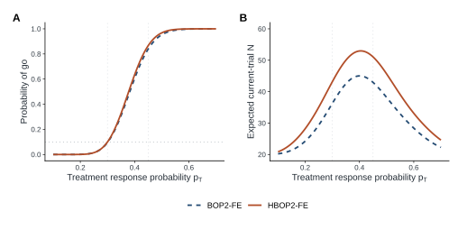
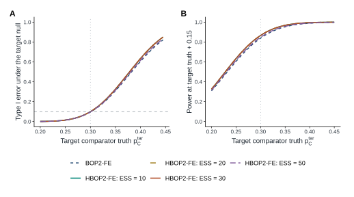
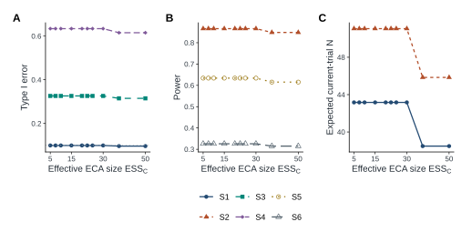
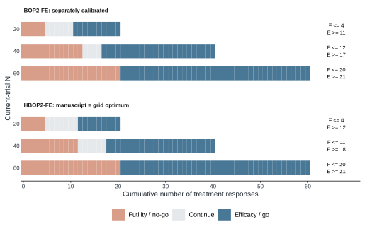
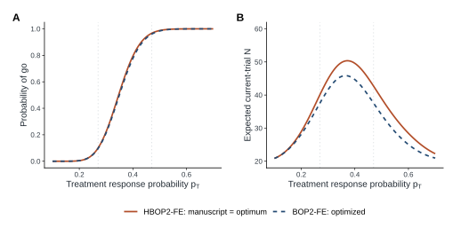
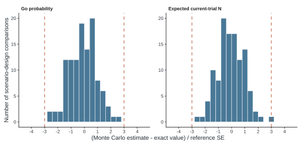

HBOP2-FE simulation and case study
Fixed completed ECA; exact full-grid calibration; independent Monte Carlo validation; seven exportable figures.
Methods
We conditioned on an analysis-ready completed ECA and simulated only current treatment outcomes. Independent Jeffreys Beta(0.5,0.5) priors were used for treatment and comparator rates. The ECA likelihood power was w = q min(1, cap/n_h), with effective borrowed size w n_h; comparator data did not update the treatment prior. Posterior superiority probabilities were calculated by one-dimensional adaptive numerical integration using upper beta tails (absolute and relative tolerances 1e-10). Boundaries were calibrated separately for each method and borrowing configuration on lambda = 0.50:0.99 by 0.01, gamma = 0.10:1.00 by 0.10, eta = 0.50:3.00 by 0.10 (13,000 points). Exact binomial calculations implemented the complete sequential stopping rule. Compatible power was maximized subject to type I error <= 0.10; prespecified tie-breakers were null expected sample size, null futility and null early efficacy, then increasing boundary parameters. The fixed-null comparator was the planning value (0.30 primary; 0.27 case). Results are conditional on the ECA and the tested boundary family.
Primary operating characteristics
Conditional on the observed ECA (60 responders among 200 subjects), exact calibration selected (lambda, gamma, eta) = (0.77, 0.80, 3.00) for HBOP2-FE and (0.87, 0.50, 2.60) for fixed-null BOP2-FE. Under the compatible null, exact type I error was 0.0994 and 0.0957, respectively. Under the compatible alternative, power was 0.8661 versus 0.8393. This 2.68 percentage-point power increase accompanied larger expected current-trial sample sizes: 43.17 versus 36.28 under the null and 51.07 versus 42.95 under the alternative. Early efficacy under the compatible alternative was 0.3212 versus 0.5633. Thus, increased compatible power was accompanied by greater patient use; this comparison does not establish general efficiency superiority.
| Scenario | Method | Target | Treatment | Exact go | MC go | MCSE | E(N) | Early futility | Early efficacy | Final go |
|---|---|---|---|---|---|---|---|---|---|---|
| S1 | BOP2-FE | 0.30 | 0.30 | 0.096 | 0.095 | 0.00093 | 36.3 | 0.731 | 0.034 | 0.062 |
| S1 | HBOP2-FE | 0.30 | 0.30 | 0.099 | 0.099 | 0.00095 | 43.2 | 0.596 | 0.007 | 0.092 |
| S2 | BOP2-FE | 0.30 | 0.45 | 0.839 | 0.840 | 0.00116 | 42.9 | 0.103 | 0.563 | 0.276 |
| S2 | HBOP2-FE | 0.30 | 0.45 | 0.866 | 0.867 | 0.00108 | 51.1 | 0.049 | 0.321 | 0.545 |
| S3 | BOP2-FE | 0.35 | 0.35 | 0.309 | 0.306 | 0.00146 | 42.5 | 0.482 | 0.127 | 0.183 |
| S3 | HBOP2-FE | 0.35 | 0.35 | 0.326 | 0.328 | 0.00148 | 50.0 | 0.336 | 0.038 | 0.288 |
| S4 | BOP2-FE | 0.40 | 0.40 | 0.605 | 0.603 | 0.00155 | 45.0 | 0.252 | 0.315 | 0.290 |
| S4 | HBOP2-FE | 0.40 | 0.40 | 0.634 | 0.632 | 0.00153 | 53.0 | 0.146 | 0.134 | 0.500 |
| S5 | BOP2-FE | 0.25 | 0.40 | 0.605 | 0.606 | 0.00155 | 45.0 | 0.252 | 0.315 | 0.290 |
| S5 | HBOP2-FE | 0.25 | 0.40 | 0.634 | 0.635 | 0.00152 | 53.0 | 0.146 | 0.134 | 0.500 |
| S6 | BOP2-FE | 0.20 | 0.35 | 0.309 | 0.311 | 0.00146 | 42.5 | 0.482 | 0.127 | 0.183 |
| S6 | HBOP2-FE | 0.20 | 0.35 | 0.326 | 0.328 | 0.00148 | 50.0 | 0.336 | 0.038 | 0.288 |
N = 60; looks = 20, 40, 60; B = 100,000 independent current trials per row. S1, S3 and S4 are target nulls; S2, S5 and S6 are target alternatives. Final go is unconditional, including the probability of reaching the final look. E(N) counts current patients only.

ECA-target mismatch
With the ECA fixed, target-null rates of 0.35 and 0.40 produced false-positive probabilities of 0.3260 and 0.6340 for HBOP2-FE, compared with 0.3094 and 0.6050 for BOP2-FE. Neither method controlled type I error under these mismatch configurations. For HBOP2-FE the unfavorable-ECA alternatives S5 and S6 had power 0.6340 and 0.3260. S3 and S6 share the same treatment rate, as do S4 and S5; their exact go probabilities are therefore equal despite different scientific interpretations. Without concurrent comparator data, target comparator truth labels the scenario but does not enter the decision rule.

Borrowing sensitivity
Recalibration across the 12 cap/quality configurations produced only two distinct integer stopping policies in this grid: ESS 5 through 30 selected one policy, whereas ESS 37.5 and 50 selected another. Consequently many borrowing configurations had exactly identical operating characteristics. Equal ESS pairs are analytically equivalent, while the additional plateaus at unequal ESS arise from discrete decision thresholds and grid optimization. These results provide no evidence here for a smooth monotone robustness gain from lowering the borrowing cap. The posterior mean displacement is a fixed diagnostic, not an empirical distribution across repeated trials.
| Cap | Quality | ESS | PMD | Lambda | Gamma | Eta | S1 | S2 | S3 | S4 | S5 | S6 |
|---|---|---|---|---|---|---|---|---|---|---|---|---|
| 10 | 0.50 | 5.0 | 0.03333 | 0.61 | 0.50 | 1.30 | 0.099 | 0.866 | 0.326 | 0.634 | 0.634 | 0.326 |
| 20 | 0.50 | 10.0 | 0.01818 | 0.65 | 0.50 | 2.00 | 0.099 | 0.866 | 0.326 | 0.634 | 0.634 | 0.326 |
| 30 | 0.50 | 15.0 | 0.01250 | 0.68 | 0.60 | 2.50 | 0.099 | 0.866 | 0.326 | 0.634 | 0.634 | 0.326 |
| 50 | 0.50 | 25.0 | 0.00769 | 0.73 | 0.70 | 3.00 | 0.099 | 0.866 | 0.326 | 0.634 | 0.634 | 0.326 |
| 10 | 0.75 | 7.5 | 0.02353 | 0.63 | 0.50 | 1.70 | 0.099 | 0.866 | 0.326 | 0.634 | 0.634 | 0.326 |
| 20 | 0.75 | 15.0 | 0.01250 | 0.68 | 0.60 | 2.50 | 0.099 | 0.866 | 0.326 | 0.634 | 0.634 | 0.326 |
| 30 | 0.75 | 22.5 | 0.00851 | 0.72 | 0.70 | 2.90 | 0.099 | 0.866 | 0.326 | 0.634 | 0.634 | 0.326 |
| 50 | 0.75 | 37.5 | 0.00519 | 0.76 | 0.70 | 2.60 | 0.096 | 0.848 | 0.315 | 0.615 | 0.615 | 0.315 |
| 10 | 1.00 | 10.0 | 0.01818 | 0.65 | 0.50 | 2.00 | 0.099 | 0.866 | 0.326 | 0.634 | 0.634 | 0.326 |
| 20 | 1.00 | 20.0 | 0.00952 | 0.71 | 0.70 | 2.80 | 0.099 | 0.866 | 0.326 | 0.634 | 0.634 | 0.326 |
| 30 | 1.00 | 30.0 | 0.00645 | 0.77 | 0.80 | 3.00 | 0.099 | 0.866 | 0.326 | 0.634 | 0.634 | 0.326 |
| 50 | 1.00 | 50.0 | 0.00392 | 0.79 | 0.70 | 2.70 | 0.096 | 0.848 | 0.315 | 0.615 | 0.615 | 0.315 |
S1-S6 columns are exact go probabilities. ESS is the borrowed likelihood size, excluding baseline prior size. PMD is comparator posterior mean minus the planning value 0.30; both are deterministic design diagnostics. Equal ESS pairs are equivalent. Distinct ESS values can also yield identical integer decisions after calibration.

Calibration and protocol boundaries
| Setting | Method | Lambda | Gamma | Eta | Type I error | Power | E(N), null | E(N), alternative |
|---|---|---|---|---|---|---|---|---|
| Primary | HBOP2-FE | 0.77 | 0.80 | 3.00 | 0.099412 | 0.866070 | 43.17 | 51.07 |
| Primary | BOP2-FE | 0.87 | 0.50 | 2.60 | 0.095683 | 0.839265 | 36.28 | 42.95 |
| Case | BOP2-FE | 0.90 | 0.70 | 2.60 | 0.096443 | 0.959813 | 37.61 | 37.53 |
| Case | HBOP2-FE | 0.73 | 0.50 | 2.80 | 0.099377 | 0.966237 | 40.16 | 42.67 |
Maximize compatible power subject to exact type I error <= 0.10. Ties: lower null E(N), higher null futility, lower null early efficacy, then increasing lambda, gamma, eta. Mathematically equal criteria are compared to 12 decimal places. The manuscript case design coincides with the selected optimum.

| Setting | Method | N | CF | CE | Futility / no-go | Efficacy / go |
|---|---|---|---|---|---|---|
| Primary | HBOP2-FE | 20 | 0.320 | 0.991 | x <= 4 | x >= 13 |
| Primary | HBOP2-FE | 40 | 0.557 | 0.932 | x <= 12 | x >= 20 |
| Primary | HBOP2-FE | 60 | 0.770 | 0.770 | x <= 22 | x >= 23 |
| Primary | BOP2-FE | 20 | 0.502 | 0.993 | x <= 5 | x >= 12 |
| Primary | BOP2-FE | 40 | 0.710 | 0.955 | x <= 13 | x >= 18 |
| Primary | BOP2-FE | 60 | 0.870 | 0.870 | x <= 22 | x >= 23 |
| Case | HBOP2-FE (manuscript) | 20 | 0.421 | 0.988 | x <= 4 | x >= 12 |
| Case | HBOP2-FE (manuscript) | 40 | 0.596 | 0.913 | x <= 11 | x >= 18 |
| Case | HBOP2-FE (manuscript) | 60 | 0.730 | 0.730 | x <= 20 | x >= 21 |
| Case | BOP2-FE | 20 | 0.417 | 0.994 | x <= 4 | x >= 11 |
| Case | BOP2-FE | 40 | 0.678 | 0.965 | x <= 12 | x >= 17 |
| Case | BOP2-FE | 60 | 0.900 | 0.900 | x <= 20 | x >= 21 |
Apply rules only if the trial has not stopped previously. Interim futility uses PP < CF, efficacy PP >= CE. At N = 60, use the single go threshold lambda. Counts between thresholds continue at an interim look.
Illustrative case study
For the illustrative ECA (172/637), the manuscript boundary parameters (0.73, 0.50, 2.80) were recovered by the full grid search. Exact type I error at pT = 0.27 was 0.099377 with expected N 40.1620. At pT = 0.47, power was 0.966237, expected N 42.6712 and early efficacy probability 0.662338. The response-count rules were futility at x <= 4 and efficacy at x >= 12 at N = 20; x <= 11 and x >= 18 at N = 40; and final go at x >= 21 at N = 60. All five manuscript numerical claims reproduced at their stated precision. At target nulls 0.32 and 0.37, false-positive probabilities increased to 0.3322 and 0.6416. The low cap, high cap and quality-discount alternatives retained the same decision policy after separate recalibration. No patient-level clinical data were available or synthesized as if observed.


| Design | Scenario | Target | Treatment | Exact go | E(N) | Early futility | Early efficacy |
|---|---|---|---|---|---|---|---|
| BOP2-FE | K1 | 0.27 | 0.27 | 0.096 | 37.6 | 0.747 | 0.028 |
| BOP2-FE | K2 | 0.27 | 0.47 | 0.960 | 37.5 | 0.029 | 0.772 |
| BOP2-FE | K3 | 0.32 | 0.32 | 0.320 | 43.7 | 0.489 | 0.114 |
| BOP2-FE | K4 | 0.37 | 0.37 | 0.623 | 45.8 | 0.249 | 0.296 |
| BOP2-FE | K5 | 0.22 | 0.42 | 0.854 | 43.1 | 0.097 | 0.544 |
| HBOP2-FE, ESS 10 | K1 | 0.27 | 0.27 | 0.099 | 40.2 | 0.641 | 0.012 |
| HBOP2-FE, ESS 10 | K2 | 0.27 | 0.47 | 0.966 | 42.7 | 0.019 | 0.662 |
| HBOP2-FE, ESS 10 | K3 | 0.32 | 0.32 | 0.332 | 47.4 | 0.377 | 0.061 |
| HBOP2-FE, ESS 10 | K4 | 0.37 | 0.37 | 0.642 | 50.4 | 0.174 | 0.192 |
| HBOP2-FE, ESS 10 | K5 | 0.22 | 0.42 | 0.868 | 48.2 | 0.063 | 0.413 |
| HBOP2-FE, ESS 50 | K1 | 0.27 | 0.27 | 0.099 | 40.2 | 0.641 | 0.012 |
| HBOP2-FE, ESS 50 | K2 | 0.27 | 0.47 | 0.966 | 42.7 | 0.019 | 0.662 |
| HBOP2-FE, ESS 50 | K3 | 0.32 | 0.32 | 0.332 | 47.4 | 0.377 | 0.061 |
| HBOP2-FE, ESS 50 | K4 | 0.37 | 0.37 | 0.642 | 50.4 | 0.174 | 0.192 |
| HBOP2-FE, ESS 50 | K5 | 0.22 | 0.42 | 0.868 | 48.2 | 0.063 | 0.413 |
| HBOP2-FE, ESS 15 | K1 | 0.27 | 0.27 | 0.099 | 40.2 | 0.641 | 0.012 |
| HBOP2-FE, ESS 15 | K2 | 0.27 | 0.47 | 0.966 | 42.7 | 0.019 | 0.662 |
| HBOP2-FE, ESS 15 | K3 | 0.32 | 0.32 | 0.332 | 47.4 | 0.377 | 0.061 |
| HBOP2-FE, ESS 15 | K4 | 0.37 | 0.37 | 0.642 | 50.4 | 0.174 | 0.192 |
| HBOP2-FE, ESS 15 | K5 | 0.22 | 0.42 | 0.868 | 48.2 | 0.063 | 0.413 |
| HBOP2-FE, ESS 30 | K1 | 0.27 | 0.27 | 0.099 | 40.2 | 0.641 | 0.012 |
| HBOP2-FE, ESS 30 | K2 | 0.27 | 0.47 | 0.966 | 42.7 | 0.019 | 0.662 |
| HBOP2-FE, ESS 30 | K3 | 0.32 | 0.32 | 0.332 | 47.4 | 0.377 | 0.061 |
| HBOP2-FE, ESS 30 | K4 | 0.37 | 0.37 | 0.642 | 50.4 | 0.174 | 0.192 |
| HBOP2-FE, ESS 30 | K5 | 0.22 | 0.42 | 0.868 | 48.2 | 0.063 | 0.413 |
The same aggregate ECA (172/637) is retained in every row. The compatible planning null is exactly 0.27, not 172/637. K1 and K2 are the compatible null and alternative; K3 and K4 are favorable-ECA target nulls; K5 is the unfavorable-ECA alternative. These are design calculations, not analyses of clinical patient records.
Numerical validation
Each of 114 scenario-design combinations was independently simulated using 100,000 current trials, with prespecified seeds. Exact probability propagation was checked against exhaustive increment-path enumeration, the vectorized calibration engine against forward propagation, and posterior quadrature against reverse integration. All 321 deterministic checks passed. All 798 exact values lay inside simultaneous Monte Carlo validation intervals with approximately 99% family coverage (Bonferroni adjustment; exact Clopper-Pearson intervals for probabilities and normal intervals using exact sample-size variance for mean N). The largest absolute standardized discrepancy was 4.080. These diagnostics assess numerical implementation and simulation precision, not external-source transportability.

Interpretation and scope
Calibration controls the tested compatible null only. Severe false-positive inflation under ECA mismatch remains a substantive limitation. Because the two methods have different discrete feasible decision families, differences at their optimized designs cannot be interpreted as a universal benefit of borrowing. This study does not evaluate patient-level propensity-score estimation, randomized concurrent controls, clinical efficacy, delayed outcomes, or unconditional repeated ECA generation. No clinical recommendations follow from these illustrative calculations.